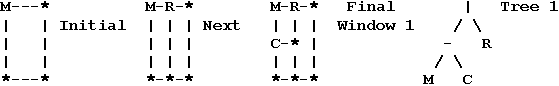
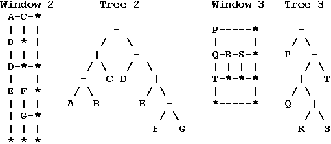
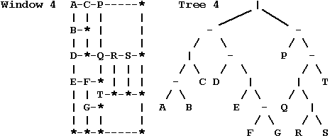

| Source file: | split.{c, cpp, java, pas} |
| Input file: | split.in |
| Output file: | split.out |
The Dotty Software Company makes software that is displayed on inexpensive text based terminals. One application for this system has a main window that can be subdivided into further subwindows. Your task is to take a description of the screen layout after a sequence of window splits and draw the minimum sized window grid that is consistent with the description.
In this problem we will concentrate on the boundaries of windows, so all the characters inside of windows will be left blank. Each window that is not further subdivided has a label. Each label is a distinct uppercase letter. For a text terminal the boundaries of windows must be drawn with characters, chosen as follows: A capital letter label is placed in the upper left-hand corner of each undivided window. Asterisks,'*', appear in corners of windows where there is not a label. Dashes, '-', appear on upper and lower boundaries where there are not corners. Vertical bars, '|', appear on side boundaries where there are not corners.
For example, the sequence of splits below would generate Window 1: Initially there could be an application window labeled M, that is split next into left and right subwindows, adding label R, and the left subwindow is split into top and bottom subwindows, adding the label C.
For each pattern of splits there is a binary tree of characters that can describe it. The window splitting and tree structures are described together, building up from the simplest cases.


The trees may be more succinctly expressed via a preorder traversal:
|-MCR -|-ABC-D|E-FG -P-|Q|RST |-|-ABC-D|E-FG-P-|Q|RST
Each undivided window must have space for at least one character inside. Hence each tree of splits will be associated with a minimum window size. Windows 1-4 are minimum sized windows for Trees 1-4. Each window illustrates the fact that even in a minimum sized window, not all undivided windows contain only one character.
Consider Tree 4 and Window 4. The main window is split into a left window with Tree 2 and right window with Tree 3. The left window is like Window 2, but the right window is not just like Window 3. The heights of left and right subwindows must match, so the right window must be stretched.
The stretching rule depends on a definition of the size of windows. For dimension calculations it is easiest to imagine that a window contains its interior and a half character wide boundary on all sides, so the total dimensions of a window are one more than the dimensions of the interior. Hence the minimum dimensions of a window are 2 by 2, since a window must contain one character inside, and we add one for the boundary. This definition also means that the sum of the widths of left and right subwindows is the width of their enclosing window. The sum of the heights of top and bottom subwindows is the height of their enclosing window.
The right window in Window 4 must be stretched to match the height 10 of the left window. The right window is split into a top with tree P having minimum height 2 and a bottom with tree -|Q|RST having minimum height 4. The rule for the dimensions in the stretched window is that the heights of the subwindows expand in proportion to their minimum heights, if possible. Some symbols may help here: Let D = 10 be the height of the combined stretched window. We want to determine D1 and D2, the stretched heights of the top and bottom subwindow. Call the corresponding minimum dimensions d = 6, d1 = 2, and d2 = 4. If the window were expanded from a total height d to D in proportion, we would have D1 = d1*(D/d) = 2*(10/6) = 3.333...and D2 = d2*(D/d) = 6.666.... Since the results are not integers we increase D1 to 4 and decrease D2 to 6.
There is a similar calculation for the bottom window with tree -|Q|RST. It is further subdivided into a top with tree |Q|RS and a bottom with tree T, each having minimum height 2 = d1 = d2. The heights need to add up to D = 6, so they are increased proportionally to D1 = D2 = 2*(6/4) = 3 (exact integers).
The final dimensions of an enclosing window are always determined before the final dimensions of its subwindows. In this example only heights needed to be apportioned. If all horizontal and vertical splits were interchanged in this example, producing a tree -|-|ABC|D-E|FG|P|-Q-RST, then widths would be apportioned correspondingly, as shown in the third part of the sample output below. If the proportion calculations do not work out to integers, it is always the top or left subwindow whose dimension is increased to the next integer.
The first line of input contains one integer, which is the total number of preorder traversals describing window structures. This line is followed by one line for each preorder traversal. Each preorder traversal will contain appropriate dividers '|' and '-' and from 1 to 26 uppercase letters.
For each preorder traversal, print the number of the preorder traversal on one line followed by the minimum sized window grid that the traversal could represent. Contrary to the general contest output conventions, there may be more than one consecutive blank in this output, but the other general rules for contest output are followed. The total number of rows or columns in output grids will be no more than 53.
Example input:
3 |-MCR |-|-ABC-D|E-FG-P-|Q|RST -|-|ABC|D-E|FG|P|-Q-RST |
Example output:
1 M-R-* | | | C-* | | | | *-*-* 2 A-C-P-----* | | | | B-* | | | | | | D-*-Q-R-S-* | | | | | E-F-* | | | | | T-*-*-* | G-* | | | | | *-*-*-----* 3 A-B-D-E---* | | | | | C-*-* F-G-* | | | | | P---Q-*T*-* | | | | | R--* | | | | | | S--* | | | | | *---*--*--* |